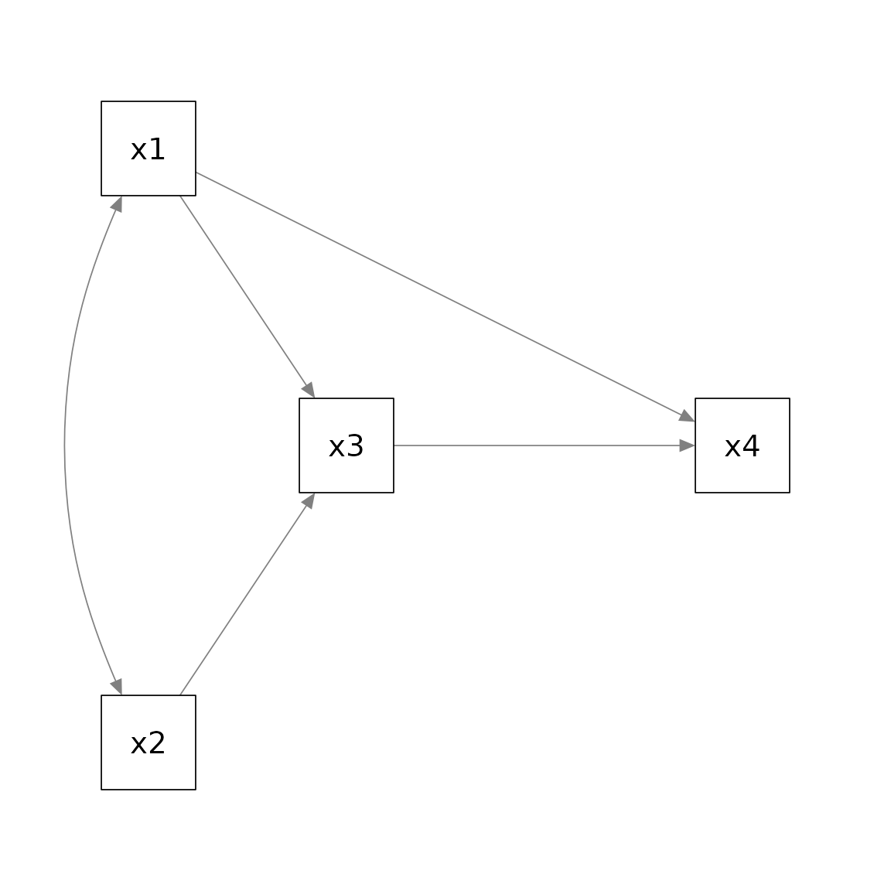
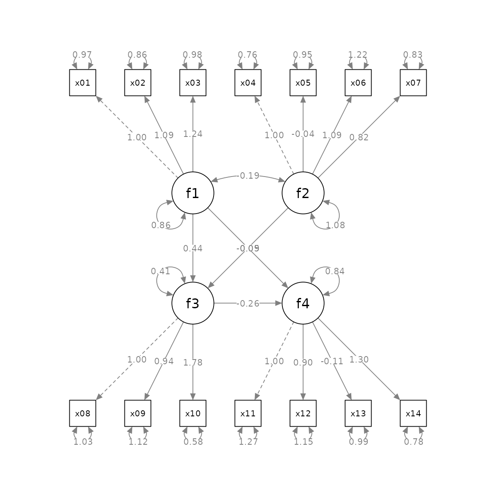

Layout Matrices
Shu Fai Cheung & Mark Hok Chio Lai
2021-10-06
Source:vignettes/layout_matrix.Rmd
layout_matrix.RmdIntroduction
One useful feature of semPlot::semPaths() is using setting the argument layout to a layout matrix to specify the location of each node in a structural equation model. This guide briefly explains how to use layout, and then introduces the helper function layout_matrix() of semptools that can be used to construct a layout matrix. Last, it describes how factor_layout is used in set_sem_layout() to specify the layout of the latent factors only, and let set_sem_layout()
decide the positions of their indicators.
What layout Does in semPlot::semPaths.
Suppose we have a path model with four variables, x1, x2, x3, and x4. x1 and x2 affects x3, and x1 and x3 affects x4. In psychology, this model is usually presented this way:

If we fit the model by lavaan::lavaan() and use semPlot::semPaths() to generate the plot without using layout, this is the resulting plot:
library(lavaan)
library(semPlot)
mod_pa <-
'x1 ~~ x2
x3 ~ x1 + x2
x4 ~ x1 + x3
'
fit_pa <- lavaan::sem(mod_pa, pa_example)
p_pa <- semPaths(fit_pa, whatLabels = "est",
sizeMan = 10,
edge.label.cex = 1.15,
style = "ram",
nCharNodes = 0, nCharEdges = 0)
This layout is different from the convention used in psychology.
To use layout, we first decide the grid to be used to position the variable (nodes). For example, for the conceptual diagram, we can try a 3 by 4 grid
The pair of numbers in each cell denote the location of the cell in a 3 by 4 matrix as indexed in an R matrix. An empty column was added between x3 and x4 because we want to move x4 further away to the right.
We then create a matrix of the same dimension as the grid, and initialize the cells by NA, which denoted a cell with nothing.
m <- matrix(NA, 3, 4)
m
#> [,1] [,2] [,3] [,4]
#> [1,] NA NA NA NA
#> [2,] NA NA NA NA
#> [3,] NA NA NA NAWe then set the position of each variable (node, as called internally in a plot by semPlot::semPaths()) by setting the corresponding cell to the name of this variable as appeared in the lavaan model.
m[1, 1] <- "x1"
m[3, 1] <- "x2"
m[2, 2] <- "x3"
m[2, 4] <- "x4"
m
#> [,1] [,2] [,3] [,4]
#> [1,] "x1" NA NA NA
#> [2,] NA "x3" NA "x4"
#> [3,] "x2" NA NA NAWe can then set layout to this matrix to tell semPlot::semPaths() how to position the four variables:
p_pa <- semPaths(fit_pa, whatLabels = "est",
sizeMan = 10,
edge.label.cex = 1.15,
style = "ram",
nCharNodes = 0, nCharEdges = 0,
layout = m)
Alternatively, we can type the matrix as it would appear if printed, and set byrow = TRUE:
m <- matrix(c("x1", NA, NA, NA,
NA, "x3", NA, "x4",
"x2", NA, NA, NA), byrow = TRUE, 3, 4)
m
#> [,1] [,2] [,3] [,4]
#> [1,] "x1" NA NA NA
#> [2,] NA "x3" NA "x4"
#> [3,] "x2" NA NA NAWe need to type more because we need to include NA for all the empty cells. However, this approach let us see immediately how the variables will be positioned. We just place the variables in the target cell, without knowing the coordinates. This is a WYSIWYG (what-you-see-is-what-you-get) approach. This is the approach used in the Quick Start Guides.
layout_matrix() in semptools
The WYSIWYG approach in the previous section has one drawback: It is not easy to change the position of the variables and the dimension of the grid. In real research, trial-and-error is usually needed to find a desirable layout. For example, if we want to add a column or row, we need ty type several NAs to crate it.
The layout_matrix() function in semptools is designed to generate the matrix using the coordinates of the variables. Instead of specifying the dimension ourselves, layout_matrix() will try to figure out the dimension based on the coordinates automatically.
For example, to generate the same layout above, we can do this:
m2 <- layout_matrix(x1 = c(1, 1),
x2 = c(3, 1),
x3 = c(2, 2),
x4 = c(2, 4))
m2
#> [,1] [,2] [,3] [,4]
#> [1,] "x1" NA NA NA
#> [2,] NA "x3" NA "x4"
#> [3,] "x2" NA NA NA
p_pa <- semPaths(fit_pa, whatLabels = "est",
sizeMan = 10,
edge.label.cex = 1.15,
style = "ram",
nCharNodes = 0, nCharEdges = 0,
layout = m2)
Suppose we want to move x4 closer to x3. Instead of deleting the 3rd columns of NA, we can
just change the coordinates of x4 in layout_matrix():
m3 <- layout_matrix(x1 = c(1, 1),
x2 = c(3, 1),
x3 = c(2, 2),
x4 = c(2, 3))
m3
#> [,1] [,2] [,3]
#> [1,] "x1" NA NA
#> [2,] NA "x3" "x4"
#> [3,] "x2" NA NA
p_pa <- semPaths(fit_pa, whatLabels = "est",
sizeMan = 10,
edge.label.cex = 1.15,
style = "ram",
nCharNodes = 0, nCharEdges = 0,
layout = m3)The best approach to specify the layout depends on the situation at hand. During the trial-and-error phrase, using layout_matrix() is good for changing the layout. When the layout has been finalized, for readability, typing the matrix row-by-row may be better (although we can still use layout_matrix() to form the matrix and then print the matrix, as we did above).
factor_layout in set_sem_layout()
If we use layout in semPlot::semPaths() for a structural models with latent factors and we want to draw both the factors and their indicators, we need to specify the positions of all nodes, that is, all the indicators and all the factors. The grid will be very large and it is difficult to determine the positions of the indicators.
The factor_layout argument in set_sem_layout() is developed to solve this problem. It works like layout in semPlot::semPaths(). In set_sem_layout(), we only need to specify the positions of the latent factors. As in layout, we create a matrix to specify the positions of the factors. The procedure is identical to what illustrated above for a path model, and all the approaches presented above can be used. The only difference is, only the names of the latent factors need to be present in the matrix, and the size of the grid only need to consider the factors.
For example, suppose we have 14 indicators and four factors, and this is the model:
mod <-
'f1 =~ x01 + x02 + x03
f2 =~ x04 + x05 + x06 + x07
f3 =~ x08 + x09 + x10
f4 =~ x11 + x12 + x13 + x14
f3 ~ f1 + f2
f4 ~ f1 + f3
'If we want to draw both the factors and the indicators, the plot will have 18 nodes:
fit <- lavaan::sem(mod, cfa_example)
p <- semPaths(fit, whatLabels="est",
sizeMan = 5,
node.width = 1,
edge.label.cex = .75,
style = "ram",
mar = c(5, 5, 5, 5))
Suppose we want to position the factors this way:

Again, we decide the grid to use, which is 3 by 3 in this example:
Therefore, this is the matrix to be used:
m_sem <- layout_matrix(f1 = c(1, 1),
f2 = c(3, 1),
f3 = c(2, 2),
f4 = c(2, 3))
m_sem
#> [,1] [,2] [,3]
#> [1,] "f1" NA NA
#> [2,] NA "f3" "f4"
#> [3,] "f2" NA NANote that layout_matrix() can also be used to set up the orientation of the indicators of each factor:
point_to <- layout_matrix(left = c(1, 1),
left = c(3, 1),
down = c(2, 2),
up = c(2, 3))We can then use this matrix in set_sem_layout() (please refer to vignette("quick_start_sem") or ?set_sem_layout on how to specify other arguments):
indicator_order <- c("x04", "x05", "x06", "x07",
"x01", "x02", "x03",
"x11", "x12", "x13", "x14",
"x08", "x09", "x10")
indicator_factor <- c( "f2", "f2", "f2", "f2",
"f1", "f1", "f1",
"f4", "f4", "f4", "f4",
"f3", "f3", "f3")
indicator_push <- c(f3 = 2.5,
f4 = 2.5,
f1 = 1.5,
f2 = 1.5)
indicator_spread <- c(f1 = 2,
f2 = 2,
f3 = 2,
f4 = 1.75)
loading_position <- c(f2 = .6,
f3 = .8,
f4 = .8)
p2 <- set_sem_layout(p,
indicator_order = indicator_order,
indicator_factor = indicator_factor,
factor_layout = m_sem,
factor_point_to = point_to,
indicator_push = indicator_push,
indicator_spread = indicator_spread,
loading_position = loading_position)
plot(p2)This make it much easier to specify the positions of factors in a structural equation model with latent factors.